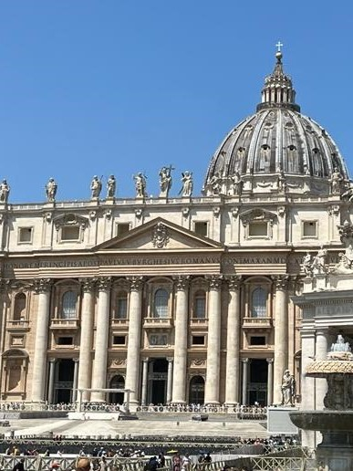
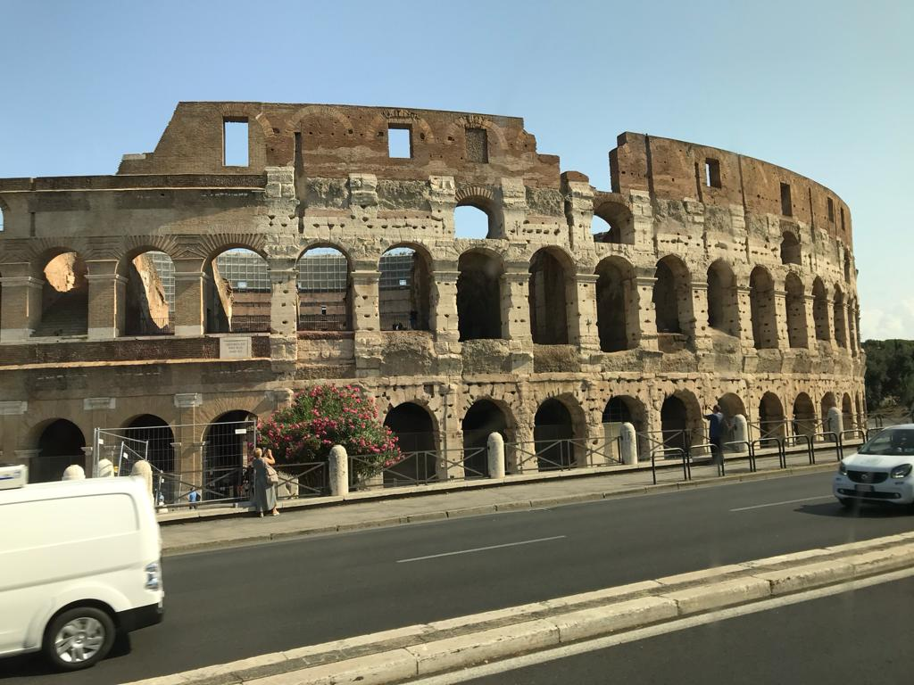
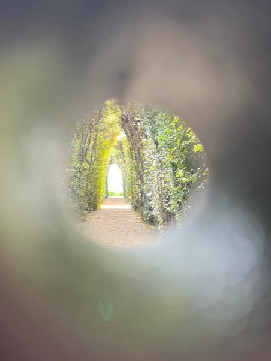

___Der Vatikan:
Der Vatikan, der kleinste unabhängige Staat der Welt, ist das religiöse Zentrum der katholischen Kirche und hat eine einzigartige Geschichte.
Er wurde 1929 durch die Lateranverträge gegründet und beherbergt den Petersdom, eine der wichtigsten Basiliken der Christenheit, die von Michelangelo und anderen berühmten Künstlern gestaltet wurde.
Neben dem Petersdom finden sich in den Vatikanischen Museen eine beeindruckende Sammlung von Kunstwerken, darunter die Sixtinische Kapelle, die von Michelangelo mit ihren weltberühmten Fresken verziert wurde.
Der Vatikan ist ein spirituelles und kulturelles Zentrum, das jedes Jahr Tausende von Pilgern und Touristen aus aller Welt anzieht.

___Das Kolosseum :
Das Kolosseum, auch als das Flavische Amphitheater bekannt, ist ein beeindruckendes Wahrzeichen in Rom.
Es wurde im Jahr 80 n. Chr. unter der Herrschaft von Kaiser Vespasian eröffnet und später von seinem Sohn Titus fertiggestellt.
Dieses antike Amphitheater wurde für spektakuläre Gladiatorenkämpfe und andere öffentliche Veranstaltungen genutzt.
Mit Platz für bis zu 50.000 Zuschauer war das Kolosseum eines der größten und beeindruckendsten Bauwerke seiner Zeit.
Seine architektonische Pracht und historische Bedeutung machen es zu einem der bekanntesten Wahrzeichen Roms und zu einem Symbol des Römischen Reiches.
Circus Maximus
Der Circus Maximus in Rom, einst das größte antike Stadion, ist ein historischer Ort von großer Bedeutung.
Er wurde im 6. Jahrhundert v. Chr. gegründet und im Laufe der Jahrhunderte immer wieder erweitert.
Der Circus Maximus wurde für Wagenrennen und andere sportliche Veranstaltungen genutzt und bot Platz für bis zu 150.000 Zuschauer.
Es war ein zentraler Ort des antiken römischen Lebens und ein Symbol für die Macht und das Vergnügen des Römischen Reiches.
Heutzutage ist der Circus Maximus ein faszinierender archäologischer Ort, der Einblicke in die reiche Geschichte Roms bietet.
Wenn man in Rom ist, lohnt es sich, den Circus Maximus zu besichtigen, um das Erbe des antiken Roms zu erleben und sich vorzustellen, wie hier einst spektakuläre Wagenrennen und Veranstaltungen stattfanden, die die Massen begeisterten.
Dieser Ort ist ein Fenster in die Vergangenheit und ein Muss für Geschichts- und Kulturinteressierte.
Geheimtipp
Die Eisdiele Giolitti in Rom, in der Nähe des Pantheons gelegen, ist bekannt für ihr köstliches Eis und gilt als ein Muss, wenn man sich in der Nähe befindet.
Die Eisdiele bietet eine verlockende Auswahl an Eissorten, von klassischen Favoriten wie Schokolade und Vanille bis hin zu einzigartigen Kreationen wie Pistazie und Tiramisu.
Die Qualität und der Geschmack des Eises bei Giolitti sind weithin geschätzt und machen den Besuch zu einem unvergesslichen kulinarischen Erlebnis.
Die charmante Atmosphäre und die zentrale Lage in der Nähe des Pantheons machen Giolitti zu einem beliebten Anziehungspunkt für Einheimische und Touristen gleichermaßen.
Wenn Sie in der Nähe des Pantheons sind, sollten Sie unbedingt einen Stopp bei Giolitti einplanen, um die köstlichen Aromen Italiens zu genießen.
Geheimtipp

___Schlüssellochblick
Der "Schlüssellochblick in Rom" ist ein echter Geheimtipp und befindet sich im Priorat der Ritter vom Heiligen Grab zu Jerusalem auf dem Aventinshügel.
Durch ein grünes Türschlüsselloch im Garten des Priorats bietet er einen einzigartigen Blick auf den Petersdom im Vatikan.
Dieser versteckte Aussichtspunkt wurde im 18. Jahrhundert geschaffen und ist ein faszinierendes Erlebnis für Besucher, das Geschichte und Schönheit vereint.
Ich bitte euch allerdings darum nicht zu versuchen mit euren Handys ein Bild davon zu machen, da die Handy Kameras den Blick nicht einfangen kann, wie man links sieht.
Das zieht die Wartezeit nur sinnlos in die Länge.